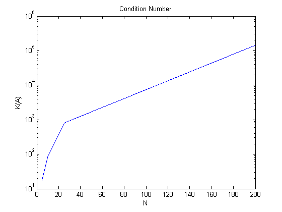
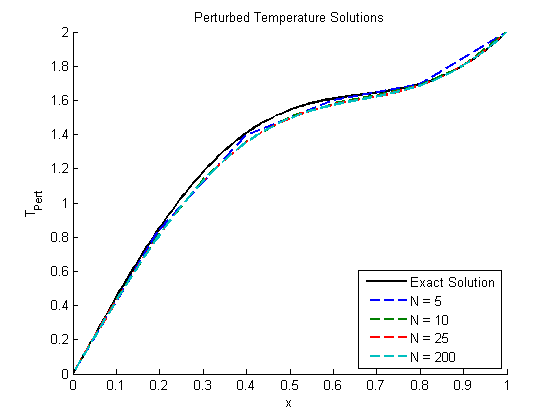
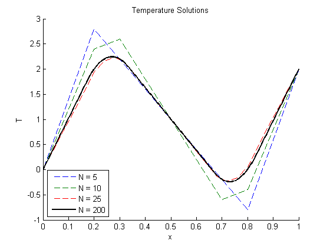

Contents
Sinusoidal Source Function, 1.d,e
clear all; close all; clc;
source = @(x) -10.*sin(3*pi/2.*x);
exact_soln = @(x) (2 + 40/(9*pi^2)).*x + 40/(9*pi^2).*sin(3*pi/2.*x);
T_0 = 0; T_L = 2;
x_0 = 0; x_L = 1;
N = [5, 10, 25, 200];
for ii = 1:length(N)
num_points = N(ii);
h = 1/num_points;
x = [x_0:h:x_L]';
A = zeros(num_points + 1);
for i = 2:num_points
A(i, i - 1) = 1;
A(i,i) = -2;
A(i, i + 1) = 1;
end
A(1,1) = 1;
A(num_points + 1, num_points + 1) = 1;
b = zeros(num_points + 1, 1);
f_x = source(x);
for k = 2: num_points
b(k) = f_x(k) * h^2;
end
b(1) = T_0;
b(num_points + 1) = T_L;
t = A\b;
t_exact = exact_soln(x);
error = abs(t - t_exact);
dA = 0.1*A;
dA(1,1) = 0;
dA(num_points + 1, num_points + 1) = 0;
t_pert = (A + dA)\b;
C{ii} = {A, b, t, t_exact, x, error, t_pert};
K(ii) = norm(inv(A), 'fro')*norm(A, 'fro');
end
figure()
hold all
title('Temperature Solutions')
xlabel('x')
ylabel('T')
plot(C{1,4}{1,5}, C{1,4}{1,4}, 'k-' ,'linewidth', 2)
for plot_case = 1:length(N)
plot(C{1,plot_case}{1,5}, C{1,plot_case}{1,3}, '--')
end
legend('Exact Solution', 'N = 5', 'N = 10', 'N = 25', 'N = 200', ...
'Location', 'southeast')
figure()
hold all
title('Error for each case')
xlabel('x')
ylabel('| T - T_{exact} |')
for plot_case = 1:length(N)
plot(C{1,plot_case}{1,5}, C{1,plot_case}{1,6}, '-', 'linewidth', 2)
end
legend('N = 5', 'N = 10', 'N = 25', 'N = 200', ...
'Location', 'northeast')
figure()
semilogy(N, K)
hold on
title('Condition Number')
xlabel('N')
ylabel('K(A)')
figure()
hold all
title('Perturbed Temperature Solutions')
xlabel('x')
ylabel('T_{Pert}')
plot(C{1,4}{1,5}, C{1,4}{1,4}, 'k-' ,'linewidth', 2)
for plot_case = 1:length(N)
plot(C{1,plot_case}{1,5}, C{1,plot_case}{1,7}, '--', 'linewidth', 2)
end
legend('Exact Solution', 'N = 5', 'N = 10', 'N = 25', 'N = 200', ...
'Location', 'southeast')


 
Piecewise Source Function, 1.f
clear all; close all; clc;
T_0 = 0; T_L = 2;
x_0 = 0; x_L = 1;
N = [5, 10, 25, 200];
for ii = 1:length(N)
num_points = N(ii);
h = 1/num_points;
x = [x_0:h:x_L]';
A = zeros(num_points + 1);
for i = 2:num_points
A(i, i - 1) = 1;
A(i,i) = -2;
A(i, i + 1) = 1;
end
A(1,1) = 1;
A(num_points + 1, num_points + 1) = 1;
f_x = zeros(length(x), 1);
for j = 1:length(x)
if and((x(j) > 1/6),(x(j) < 1/3))
f_x(j) = -100;
elseif ((x(j) > 2/3) && (x(j) < 5/6))
f_x(j) = 100;
end
end
b = zeros(num_points + 1, 1);
for k = 2: num_points
b(k) = f_x(k) * h^2;
end
b(1) = T_0;
b(num_points + 1) = T_L;
t = A\b;
C{ii} = {A, b, t, x, f_x};
end
figure()
hold all
title('Temperature Solutions')
xlabel('x')
ylabel('T')
for plot_case = 1:length(N) - 1
plot(C{1,plot_case}{1,4}, C{1,plot_case}{1,3}, '--')
end
plot(C{1,length(N)}{1,4}, C{1,length(N)}{1,3}, 'k-', 'linewidth', 2)
legend('N = 5', 'N = 10', 'N = 25', 'N = 200', ...
'Location', 'southwest')

Part 1.h
clear all; close all; clc;
A = zeros(6);
for i = 2:5
A(i,i) = -2;
A(i, i - 1) = 1;
A(i, i + 1) = 1;
end
A(1,1) = 1;
A(6, 5) = -1;
A(6,6) = 1;
A
A_inverse = inv(A)
fprintf('We see that the inverse of A exists and A is NOT singular.');
A =
1 0 0 0 0 0
1 -2 1 0 0 0
0 1 -2 1 0 0
0 0 1 -2 1 0
0 0 0 1 -2 1
0 0 0 0 -1 1
A_inverse =
1.0000 0 0 0 0 0
1.0000 -1.0000 -1.0000 -1.0000 -1.0000 1.0000
1.0000 -1.0000 -2.0000 -2.0000 -2.0000 2.0000
1.0000 -1.0000 -2.0000 -3.0000 -3.0000 3.0000
1.0000 -1.0000 -2.0000 -3.0000 -4.0000 4.0000
1.0000 -1.0000 -2.0000 -3.0000 -4.0000 5.0000
We see that the inverse of A exists and A is NOT singular.